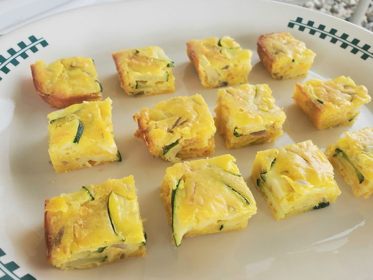

Best Zucchini Appetizer

Best Zucchini Appetizer
Made with Bisquick, this zucchini appetizer is delicious, easy, and perfect for any occasion. Zucchini, Cheddar cheese, and onions are baked together, resulting in irresistible bite-sized appetizers.
Ingredients
- 3 cups sliced zucchini
- 1 cup all-purpose baking mix (such as Bisquick)
- 4 eggs, beaten
- ½ cup chopped onion
- ½ cup shredded Cheddar cheese
- ½ cup vegetable oil
- 1 clove garlic, minced
- ½ teaspoon salt
Steps
- Preheat the oven to 350 degrees F (175 degrees C). Lightly grease a 9x13-inch baking dish.
- Mix zucchini, all-purpose baking mix, eggs, onion, Cheddar, oil, garlic, and salt together in a large bowl until well combined. Spread mixture into the prepared baking dish.
- Bake in the preheated oven until bubbly and lightly browned, about 25 minutes. Cut into 36 pieces to serve.